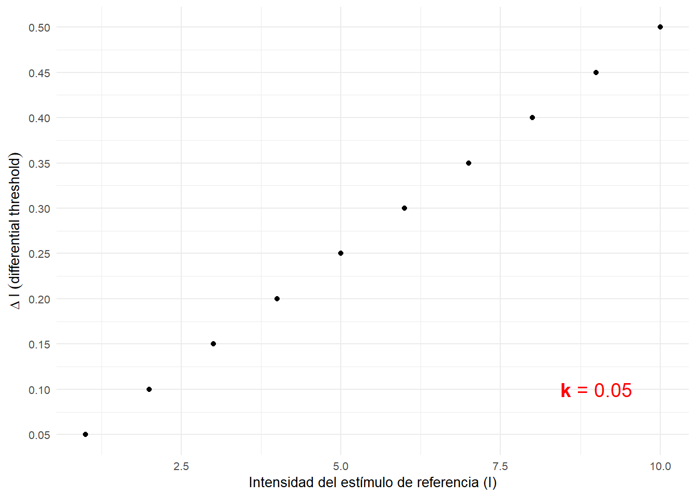
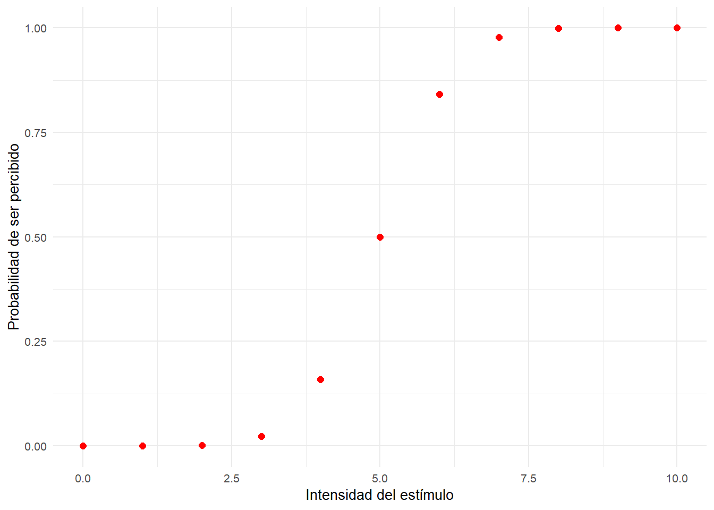
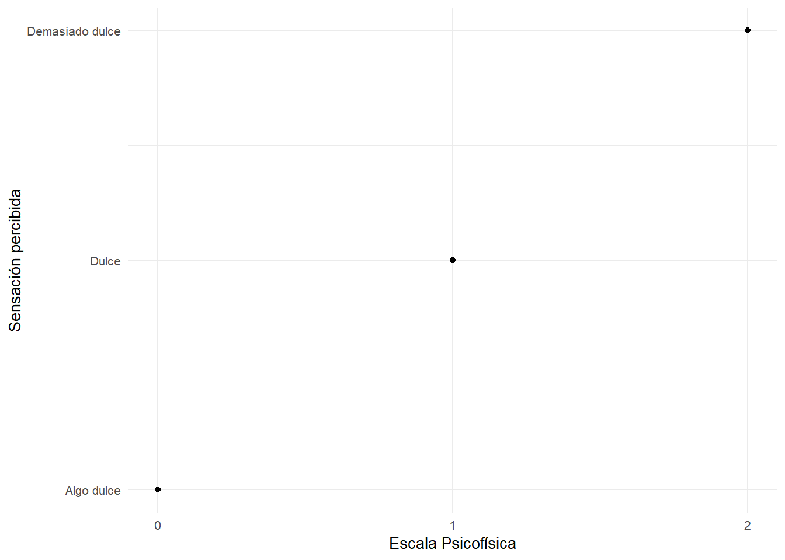

Práctica 2: Obtención de los umbrales de detección de la colinealidad.
Conceptos previos
El paso de la Filosofía a la Psicología como ciencia ha sido objeto de debate durante largo tiempo y establecer precursores a veces puede ser inexacto. Sin embargo, hay momentos en el desarrollo de la epistemología o filosofía sobre el conocimiento que han ayudado historicamente a entender por qué y cómo el objeto de estudio de la Psicología, es decir, el estudio de la conducta pasó a considerarse una ciencia (Para una interesante descripción que se puede discutir en clase continúa aquí).
La corrientes filosóficas imperantes hasta la ilustración abogaban porque el conocimiento podia existir independientemente del observador y que, de hecho, el mismo podría acceder a él mediante ciertos criterios de verdad basados en la lógica. El observador se trata por lo tanto de un sujeto pasivo que ya posee sensaciones e ideas a las cuales sólo necesita acceder para conocerlas. Es durante la Ilustración, en el siglo XVII cuando Inmanuel Kant utiliza la metáfora del giro copernicano (pasar de un universo geocéntrico a un universo heliocéntrico) para situar de nuevo al observador en una posición activa sobre el conocimiento. Kant argumenta que para llegar al conocimiento, las sensaciones han de pasar por una especie de filtro. Una serie de ideas trascendentales que dan forma a esas sensaciones. Estas ideas son inacesibles por un observador, y por lo tanto, no son susceptibles de poder ser estudiadas. En este momento, sin saberlo, Kant estaba describiendo cómo las diferentes estructuras sensoriales filtran y dan forma al tipo de información que un sistema biológico para generar algún tipo de conocimiento sobre el entorno. Por ejemplo, el paso de la energía electromagnética que compone la luz a la energía bioquímica que utiliza el sistema nervioso.
Inciso: Estos dos últimos párrafos no serán objeto de examen, pero siempre es importante saber de dónde venimos para poder entender a dónde vamos.
A principios del siglo XIX, Ernst Weber describe, la que se conoce como la primera ley Psicofísica, la Ley de Weber. Ãste médico alemán, se dió cuenta de que la capacidad de diferenciar dos pesos diferentes no se encontraba tanto en el peso absoluto de un objeto, sino en la diferencia relativa entre un objeto de referencia (Estímulo de referencia) y otro (Estimulo de comparación). Weber encuentra que para que dos objetos de diferente masa pudieran ser diferenciables, su masa debería variar entorno a un 3%. Es decir, si el objeto de referencia pesa 100g, para ser capaces de diferenciarlo de otro, éste debe pesar 103/97g o más/menos. El dato importante está en que Weber se dió cuenta de que esto se cumplia irrespectivamente del peso de refrencia. Es decir, al igual que en el anterior ejemplo, para que un objeto de 2kg. pudiese diferenciarse de otro, éste debería pesar al menos 2.06kg.
Si dividimos la diferencia necesaria para poder diferenciar dos estímulos entre la magnitud del estímulo de referencia podemos obtener una constante (\(k\)).
\[\begin{equation} \label{WF} \ k = \frac{\Delta I}{I_{ref}} \end{equation}\]Esta constante nos permite obtener de forma rápida la Mínima Diferencia Perceptible (MDP o Just Noticeable Difference; JND en inglés) con respecto a cualquier intensidad de un estímulo.
data_frame(I = seq(1,10,by = 0.5),
k = 0.05,
DI = I * k) %>%
ggplot(aes(I,DI)) +
geom_point() +
labs(x = "Intensidad del estímulo de referencia (I)", y = expression(Delta~I~(difference~threshold))) +
annotate("text", x = 9, y = 0.1, label = "paste(bold(k),' = ', bold(0.05))", color = "red", parse =T, size = 5) +
theme_minimal(10)
Además, podemos utilizar esta constante (\(k\)), como un índice de sensibilidad para comparar entre diferentes modalidades sensoriales.
El paso clave de la Filosofía a la Psicología viene dado en primer lugar por Fechner a partir de los principios en Psicofísica. A la vista de los descubrimientos de Weber, Fechner argumenta que la relación entre la estimulación física y su sensación percibida puede ser medida mediante sencillas relaciones matemáticas como la ley de Weber.
Fechner, junto a Helmholtz y Wundt se consideran los padres de la Psicología Experimental y de la Psicofísica. Bajo la perspectiva de la psicofísica, podemos describir el proceso perceptivo completo mediante la siguiente cadena causal:
Estímulo distal: Estimulación o energía física reflejada o producida por una fuente externa a los mismos receptores sensoriales. Por ejemplo, una pelota.
Estímulo proximal: Proyección de la energía del estímulo distal sobre los receptores sensoriales correctos. Por ejemplo, la imagen 2D en la retina.
Transducción: Transformación de la energía proyectada por el estímulo proximal a cambios energéticos dentro del sistema nervioso.
Percepción: Tras pasar por diferentes fases de procesos nerviosos, se daría la percepción de un estímulo.
Esta cadena nos muestra que el proceso perceptivo requiere de diferentes transformaciones de la energía que daría lugar al percepto. Lo que haría que nuestra percepción no tenga una correspondencia directa con la estimulación física. Sin embargo, esto es algo que nos es familiar ya… Cof, cof… ;P
Es por esta razón que Fechner propone diferntes métodos para estudiar cómo se relacionan la estimulación física con la percepción.
Métodos psicofísicos
- De los límites: el experimentador incrementa/decrementa progresivamente y de forma ordenada la intensidad del estímulo hasta que el observador cambia su respuesta. Por ejemplo, si queremos averiguar a qué intensidad de decibelios un sonido es audible podemos hacer el siguiente experimento: Empezamos a mostar a un participante un ruido a un nivel claramente audible y le pedimos que pulse l botón “S” si lo oye y el botón “N” si no lo oye. A medida que el participante va respondiendo que oye el sonido vamos disminuyendo los decibelios hasta que cambia su respuesta de “S” (sí), a “N” (no). En ese momento, empezamos a presentar estímulos en la dirección contraria, es decir, si antes cada vez que el participante afirmaba oír el ruido disminuíamos la intensidad, ahora presentamos un sonido claramente inaudible y a medida que va afirmando que no oye el estímulo vamos aumentando su intensidad.

- De los estímulos constantes: presentación aleatoria (o pseudoaleatoria) de un conjunto de intensidades seleccionadas de antemano.

- Del ajuste: el sujeto controla y ajusta la intensidad del estímulo.

Vamos a poner un ejemplo:
Detección del Umbral Absoluto
Fechner estaba interesado en poder establecer una escala de correspondencias psicofísicas. Esta escala se empezaría siempre a contabilizar desde la intensidad mínima que es posible percibir un 50% de las veces. Punto que denominaría como Umbral Absoluto. Vamos a ver cómo podemos aplicar esto a la vida real…
Imaginemos que queremos saber cual es la mínima cantidad de gotas de edulcorante que son necesarias para empezar a percibir el café dulce (sí, estoy escribiendo con café en la mano). Esta se trataría de una tarea de detección. El objetivo de las tareas de detección es la obtención del nivel estimular mínimo para detectar un estímulo (Umbral Absoluto) al nivel del azar (el 50% de las veces).
\[\begin{equation} \label{UA} \ UA = Q2 \end{equation}\]En nuestro laboratorio tenemos 11 muestras de café, en cada una de las cuales hemos puesto de 0 a 10 gotas de edulcorante. Para ver cual es el mínimo número de gotas necesarias haremos probar a los participantes las diferentes tazas de café de forma aleatoria varias veces y anotaremos su respuesta (si lo percibe dulce Sí o No si lo percibe tan amargo como siempre).
¿Qué método psicofísico habríamos utilizado?
Después de realizar el experimento, calculamos la media de síes (codificados como 1) y noes (codificados como 0). Si representamos gráficamente estos datos, en la mayoría de casos obtendremos un grafico parecido al siguiente:
ggplot(data_frame(I = seq(0,10,by=1),
p = pnorm(I,mean = 5,sd = 1)),aes(I,p)) +
geom_point(size = 2, color = "red") +
labs(x = "Intensidad del estímulo", y = "Probabilidad de ser percibido") +
theme_minimal(10)
Dado que todos los participantes presentan cierta viariabilidad, se espera que cada uno de nosotros muestre un Umbral Absoluto relativamente diferente. Esta varaibilidad puede deberse a factores tales como el ruido intrínseco del estímulo, el ruido sensorial debido a interferencias en el sistema nervioso o criterios decisionales. Dependiendo de cuál sea su UA podemos identificar diferentes tipos de observadores:
Sensibles: Son aquellos observdores con tendencia a responder que han percibido un estímulo aún cuando la intensidad es muy baja o cuando ni siquiera se ha presentado. Podríamos hablar de un observador liberal si y si sólo si la razón de su respuesta se debiera a criterios decisionales como la tendencia al riesgo o factores motivacionales de la tarea y no puramente debido a un componente sensorial. Por ejemplo, si recompenso al participante cada vez que acierta si hay o no edulcorante pero no penalizo los errores, los observadores tenderán a responder que han percibido el edulcorante para maximizar sus ganancias.
Poco sensibles: Son aquellos que tienden a responder que han percibido un estímulo cuando la intesidad es razonablemente alta. De la misma manera, podemos hablar de observadores conservadores aludiendo a factores decisionales. Por ejemplo, los participantes reciben en principio 10 euros sólo por participar. Sin embargo, les anuncio que si se equivocan una sola vez no recibirán los 10 euros. De esta manera, los participantes tenderán a responder únicamente cuando estén completamente seguros de que el edulcorante se encuentra presente.
UA = data_frame(I=seq(0,10,by=0.05),
Medium = pnorm(I, mean = 5,sd=1),
High_Noise = pnorm(I, mean = 5, sd = 2),
Low_Noise = pnorm(I, mean = 5, sd = 0.5),
p_c_s = pnorm(I, mean = 7.5, sd = 1),
p_l_s = pnorm(I, mean = 2.5, sd = 1))
UA %>%
gather(id,value,c(Medium,p_c_s,p_l_s)) %>%
mutate(id = factor(id,levels = c("p_l_s","Medium","p_c_s"),labels = c("Sensible","-","Poco sensible"), ordered = T ),
UA = ifelse(id == "Sensible",2.5,ifelse(id == "-",5,7.5))) %>%
ggplot(.,aes(I,value, color = as.factor(id))) +
geom_line(size = 2 ) +
geom_vline(color = "red", aes(xintercept = UA), size = 1, linetype =2) +
facet_wrap(~id) +
guides(color = FALSE) +
theme_minimal(10)
Para saber si un observador es más o menos sensible que otro en cuanto al tipo de estímulo presentado podemos calcular un índice de sensibilidad de detección -> S = 1 / UA. De esta manera, un observador con un UA de 2.5 será más sensible que uno que presenta un UA de 6.
Parte práctica: Umbral Absoluto de la Agudeza Visual
¿Qué es la agudeza visual?
Agudeza visual (AV): Separación mínima entre dos puntos, dos líneas o los extremos de un aro abierto, que un observador es capaz de detectar. También denominada resolución espacial del procesamiento visual.
Depende de la distancia inter-receptores.
En ocasiones se le llama âminimum separableâ.

La agudeza visual varía dependiendo de la densidad de conos o bastones, disminuyendo a medida que nos alejamos de la fóvea. En optometría clínica, la AV normal se establece en 1 min arc.
Dentro de un laboratorio de percepción visual normalmente describimos las dimensiones de un objeto basándonos en el ángulo visual que subtende. ¿Por qué hacemos ésto? Fijémonos en la siguiente imágen:

Desde un punto de vista estructural, la distancia mínima para detectar la separación entre dos puntos es la misma que la distancia que separa dos fotoreceptores (conos o bastones) en la retina.

Discriminación: Umbral Diferencial
Pero además, Fechner encontró que no somos capaces de percibir un continuo de cambios graduales en un estímulo, si no que necesitamos de una cantidad o diferencia en la intensidad del estímulo que nos permita indicar que ha habido un cambio, a este cambio en al intensidad se le llamaría dmp o diferencia mínima perceptible. Esto se debe a que al igual que la variabilidad en el Umbral Absoluto, también nos podemos encontrar variabilidad en la medida que nuestro sistema perceptivo realiza de un estímulo. Nuestro sistema nervioso presenta ruido interno y no es capaz de representar todas las modalidades sensoriales con una correspondencia directa con el estímulo. Esto afecta a cómo somos capaces de interpretar un estímulo y es intresante para caracterizar lo bueno que es nuestro sistema sensorial discriminando entre dos estímulos parecidos. Para ello, calculamos el Umbral Diferencial (UD).
Por volver a nuestro ejemplo anterior… Imaginemos que estamos en el departamento de I+D de una conocida cadena de cafeterías y que nuestro supervisor nos dice que: la cantidad de azúcar en el café está correlacionada con el número de cafés que sirven. Es decir, vender un café más dulce incrementa el número de clientes. Sin embargo, tenemos registros de que el gusto es un sistema sensorial que se satura de forma rápida, por lo que nuestros clientes sólo son capaces de percibir el café en tres estados distintos: algo dulce, dulce y demasiado dulce. La escala de correspondencia psicofísica que propondría Fechner establecería el UA en el 0, mientras que las siguientes sensaciones percibidas estarían separadas entre sí por dmp’s.
data_frame(I = seq(0,2,by = 1),
k = 0.05,
DI = I * k) %>%
ggplot(aes(I,DI)) +
geom_point() +
labs(x = "Escala Psicofísica", y = "Sensación percibida") +
scale_x_continuous(breaks = c(0,1,2)) +
scale_y_continuous(breaks = c(0,0.05,0.1), labels = c("Algo dulce","Dulce","Demasiado dulce")) +
theme_minimal(10)
Sin embargo, nuestro jefe nos indica que los consumidores rechazan frontalmente un café demasiado dulce, por lo que nos encontraríamos con un problema: si el café está muy dulce, los clientes se quejan y dejan de acudir a nuestra cadena. Por lo tanto, nuestra misión es maximizar la cantidad de azúcar en el café para optimizar el número de ventas sin perder clientes.
Para ello haremos un sencillo experimento: Se presentarán pares de estímulos, en primer lugar el estímulo estándar, un café con 5 gotas de edulcorante (UA, el 0 en la escala de Fechner) y después, uno de los estímulos de comparación de forma aleatoria (cafés con 11 diferentes cantidades de azúcar en un rango de 0 a 10 g). Se le hará probar al participante varias veces todos los estímulos. Y, al igual que en el anterior experimento, codificaremos su respuesta como más dulce que el estándar (1) e igual de dulce que el estándar (0). De esta manera, obtendremos una curva parecida a la anterior:
UD <- data_frame(I=seq(0,10,by=1),
p_UD = pnorm(I, mean = 5,sd=2))
ggplot(UD,aes(I,p_UD)) +
geom_point(size = 2, color = "red") +
labs(x = "Intensidad del estímulo", y = "Probabilidad de ser percibido como más dulce") +
theme_minimal(10)
Si a estos puntos le aplicamos una fórmula para obtener la curva psicométrica, seremos capaces de estimar qué probabilidad hay de que un participante afirme que el café está dulce para cualquier cantidad de edulcorante. El Umbral diferencial se define como la semidiferencia entre el tercer y el primer cuartil. Es decir, la mitad de la diferencia entre el punto que arroja una probabilidad de percibir el café como más dulce del 75% y del 25%.
\[\begin{equation} \label{UD} \ UD = (Q3 - Q1)/2 \end{equation}\]UD_lin <- data_frame(I=seq(0,10,by=0.1),
p_UD = pnorm(I, mean = 5,sd=2))
##########################################################################################
########################### DISCRIMINACI?N: UMBRAL DIFERENCIAL ###################
# ##########################################################################################
I_Q3 = UD_lin$I[which.min(abs(UD_lin$p_UD-0.75))]
I_Q1 = UD_lin$I[which.min(abs(UD_lin$p_UD-0.25))]
UD_1 = (I_Q3-I_Q1)/2
ggplot(UD_lin,aes(I,p_UD)) +
geom_line(size = 2) +
geom_point(color = "red", x = I_Q1, y = 0.25, size = 4) +
geom_point(color = "red", x = I_Q3, y = 0.75, size = 4) +
geom_vline(xintercept = c(I_Q1,I_Q3), color="red") +
geom_segment(aes(x=5,xend=5+UD_1,y=0.1,yend=0.1),color="red",arrow= arrow(length = unit(0.1, "inches"))) +
geom_text(aes(x=I_Q3*1.25,y=0.1,label="UD = (Q3 - Q1)/2"),color="red",arrow= arrow(length = unit(0.1, "inches"))) +
theme_minimal(10)## Warning: Ignoring unknown parameters: arrow
En nuestro experimento hemos observado que: El primer cuartil es 3.7g., mientras que el tercer cuartil es 6.3g. Por lo tanto:
\[\begin{equation} \label{UD_1} \ 1.3 = (6.3 - 3.7)/2 \end{equation}\]Como hemos podido observar en la anterior curva, en definitiva, el Umbral Diferencial se trata de una medida sobre el rango de intnsidades que genera dudas al participante u observador sobre cómo categorizar debido al ruido en la medida. De esta manera, podemos visualizar diferentes niveles de sensibilidad a una modalidad sensorial según lo amplio que sea este rango.
En la siguiente figura podemos encontrar una representación gráfica de 3 niveles de sensibilidad:
a <- data_frame(
I=seq(0,10,by=0.1),
Sensible = pnorm(I, mean = 5,sd=0.5),
Medium = pnorm(I, mean = 5,sd=1),
Baja_Sensibilidad = pnorm(I, mean = 5,sd=2)
)
a %>%
gather(id,value,c("Sensible","Medium","Baja_Sensibilidad")) %>%
mutate(id = factor(id,levels = c("Sensible","Medium","Baja_Sensibilidad"),labels = c("Alta sensibilidad"," ","Baja sensibilidad"), ordered = T )) %>%
ggplot(.,aes(I,value, color = id)) +
geom_line(size = 2) +
geom_vline(xintercept = 5, color = "red", size = 1, linetype = 2) +
labs(x = "Intensidad del estímulo", y = "Probabilidad de responder \'SI\' ") +
facet_wrap(~id) +
guides(color = FALSE) +
theme_minimal(10)
Con el umbral diferencial podemos obtener varios índices de sensibilidad a un estímulo:
- Igual que hacíamos con el UA, podemos calcular un índice de sensibilidad de discriminación -> S = 1 / UD.
- De esta manera, un observador con un UD de 2.5 será (?) sensible que uno que presenta un UD de 6.
- Constante (k) o fracción de Weber:
Como se mencionó anteriormente, una de las utilidades de calcular la constante de la ley de Weber es que nos permite comparar entre diferentes modadlidades sensoriales. Si recordamos, Weber describió la comparación entre pesos con una \(k_{peso} = 0.03\). Por otra parte, en nuestro experimento hemos observado una k para la comparación de cantidades de azúcar de \(k_{azúcar} = 0.26\).
¿Qué modalidad sensorial es más precisa?
Ahora que ya sabemos cuál es el \(k_{azúcar} = 0.26\) (y asumiendo que se cumple la ley de Weber), calcula cuál sería el punto de mínima cantidad de edulcorante con el cual el café se percibiría como demasiado dulce.
Utilizando Logit para linealizar
Uno de los problemas que presentan las curvas anteriores es que, no son fáciles de interpretar, ya que requieren un ajuste no lineal para calcular el UA y el UD con precisión. Sin embargo, podemos utilizar ciertos “trucos” matemáticos para facilitarnos esta misión. Para ello, vamos a utilizar una transformación de nuestros datos anteriores con el objetivo de pasar de una curva con forma sigmoidal a una función lineal. Para ello, vamos a transformar las probabilidades en lo que se denomina como unidades logit aplicando la siguiente fórmula:
\[\begin{equation} \label{logit} \ logit(p) = ln(\frac{p}{1-p}) \end{equation}\]En ésta fórmula, \(p\) es la probabilidad asociada a cierta respuesta para una intensidad determinada y \(ln\) el logaritmo neperiano o natural (no confundir con el logaritmo en base 10 o \(log\)). Si aplicamos esta fórmula a la curva anterior obtenemos una aproximación funcional a una función lineal.
logit = UD %>%
mutate(logit_Medium = log(p_UD/(1-p_UD)))
fit_logit = coef(lm(logit$logit_Medium ~logit$I ))
ggplot(logit,aes(I,logit_Medium)) +
geom_point(size=4, color = "red") +
labs(x = "Intensidad del estímulo", y = "Probabilidad de responder \'SI\' \n en unidades Logit' ") +
geom_smooth(method ="lm", se = F) +
geom_hline(yintercept = 0, linetype = 2) +
annotate(geom="text", x = 6, y = -2, label = paste("y = ",round(fit_logit[1],2)," + ", round(fit_logit[2],2),"x")) +
theme_minimal(10)
Si aplicamos una regresión lineal a los puntos anteriores mediante sistemas como SPSS, Excel, MatLab o R (o incluso a mano si diesemos esta clase 10 años antes), podemos obtener la probabilidad asociada a cualquier intensidad. Además, una propiedad interesante de esta transformación es que la proporción del 50%, es decir, el segundo cuartil o Q2 (UA), corresponde a un apuntuación Logit( p = 0.5 ) = ln ( 0.5/(1-0.5) ) = 0.